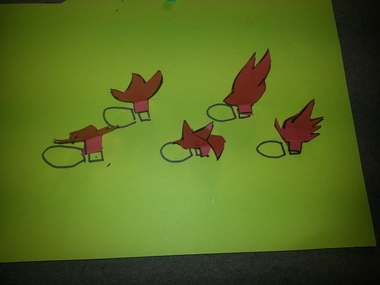
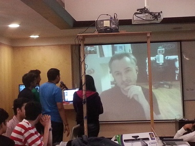
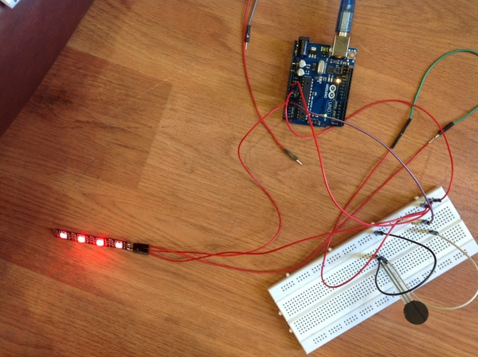
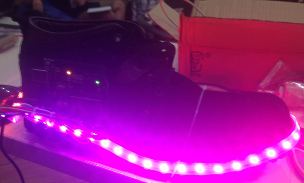

BRIEF
Workshop : MIT Media Labs
Track (Group) : Magical Interface
Project Duration : Jan 27th to Feb 1st, 2014
Project Summary : The project was centered around fun, magic and playing with flames. The concept was to design funky shoes which could be used in performing arts that emit fire as you walk. We narrowed down the idea to use red LEDs with dry ice and water to imitate flames and attached the system to a shoe.
Team : 2 Designers, 2 Engineers
Mentors : Anirudh Sharma, Fluid Interfaces Group, MIT Media Lab | Co-founder, Ducere
Valentin Huen, Fluid Interfaces Group, MIT Media Lab
Workshop : MIT Media Labs
Track (Group) : Magical Interface
Project Duration : Jan 27th to Feb 1st, 2014
Project Summary : The project was centered around fun, magic and playing with flames. The concept was to design funky shoes which could be used in performing arts that emit fire as you walk. We narrowed down the idea to use red LEDs with dry ice and water to imitate flames and attached the system to a shoe.
Team : 2 Designers, 2 Engineers
Mentors : Anirudh Sharma, Fluid Interfaces Group, MIT Media Lab | Co-founder, Ducere
Valentin Huen, Fluid Interfaces Group, MIT Media Lab
INITIAL SKETCHES OF OUR IDEA

IDEA CHART

INITIAL EXPERIMENT
Here we had tried to play with a deodorant can & a lighter to emit fire. As cool and exciting as it seems, it is quite dangerous. We performed several experiments with the setup, but consequently concluded to think of a much safer idea to take this forward.
Here we had tried to play with a deodorant can & a lighter to emit fire. As cool and exciting as it seems, it is quite dangerous. We performed several experiments with the setup, but consequently concluded to think of a much safer idea to take this forward.
Marco Tempest's Magic
On Jan 29th, the third day of the workshop, we had an amazing opportunity to have an interaction with Marco Tempest, Virtual Magician and Techno-Illusionist via Skype. We got a chance to discuss with him about our ideas and the problems we faced during the prototyping. Later that evening, we had another brainstorming session and modified the entire idea. The deo + lighter concept was probably not all that safe for use.
On Jan 29th, the third day of the workshop, we had an amazing opportunity to have an interaction with Marco Tempest, Virtual Magician and Techno-Illusionist via Skype. We got a chance to discuss with him about our ideas and the problems we faced during the prototyping. Later that evening, we had another brainstorming session and modified the entire idea. The deo + lighter concept was probably not all that safe for use.

Magic with the LEDs
Inspired by the concept of imitation flames with LEDs, we started to work on programming the arduinos for the fire effect instead of actual fire. After getting the LEDs to rescue, we had them programmed to emit RED light at rest and rainbow colors by applying pressure. We have used Arduino UNO programmed RGB LEDs here around the shoe and kept the pressure sensor at the heel of the shoes.
Inspired by the concept of imitation flames with LEDs, we started to work on programming the arduinos for the fire effect instead of actual fire. After getting the LEDs to rescue, we had them programmed to emit RED light at rest and rainbow colors by applying pressure. We have used Arduino UNO programmed RGB LEDs here around the shoe and kept the pressure sensor at the heel of the shoes.


Videos
Here is a short video explaining the prototype of the magic shoe - sole scorchers.
Here is a short video explaining the prototype of the magic shoe - sole scorchers.